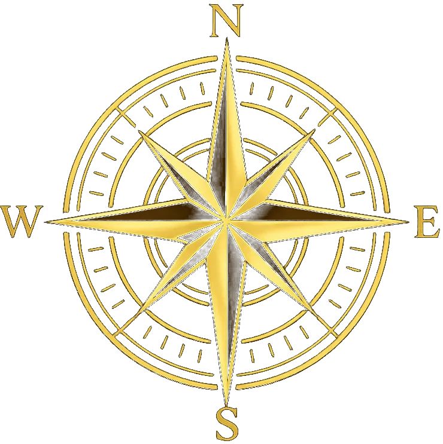
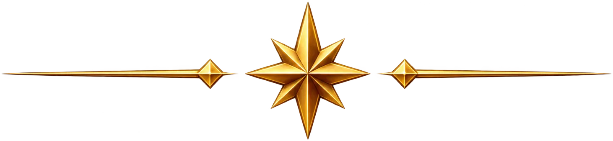

Puntode Partida
Tu viaje de aprendizaje

✦
¡Hola!
¡Vos podés! Seguí así, paso a paso.
Tu progreso
Módulos
Todos los ejercicios en orden.
Modo oscuro
Ajustá la apariencia
Audio del tutor
Voz automática al entrar a cada ejercicio
Actividades hechas
De X disponibles
Precisión
Respuestas correctas sobre intentadas
Mejor racha
Respuestas correctas consecutivas
Logros
¡Módulo completado!
🏆
¡Lo lograste!
¿Seguís ahí? Te espero para seguir cuando quieras.
Llevás un buen rato practicando. ¿Seguís o preferís hacer una pausa?
Skill Check
Llegaste a la comprobación de esta plataforma.
Ahora vamos a ver cuánto podés hacer por tu cuenta.
Ahora vamos a ver cuánto podés hacer por tu cuenta.
Terminaste el Skill Check
Esta parte era para medir qué podías hacer por tu cuenta.
¿Querés ver la explicación y volver a practicar con la ayuda correspondiente?
¿Querés ver la explicación y volver a practicar con la ayuda correspondiente?